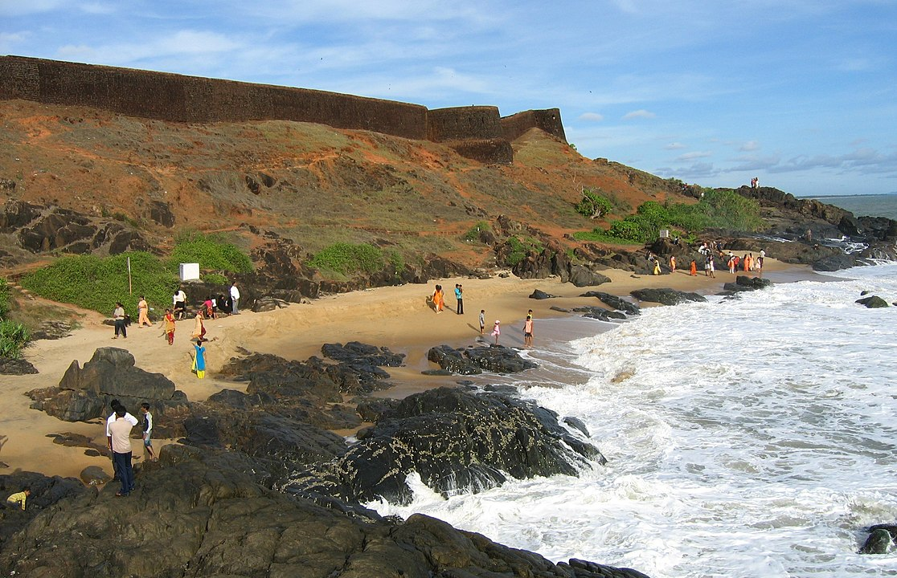

Kasargod
Kasaragod or Kaasrodu is a municipal town and administrative headquarters of Kasaragod district of Kerala state in India. Situated in the rich biodiversity of Western Ghats, it is known for the Chandragiri and Bekal Forts, Chandragiri River, historic Kolathiri Rajas, natural environment of Ranipuram and Kottancheri Hills, historical and religious sites like the Madiyan Kulom temple, Madhur Temple, Ananthapuram Lake Temple and Malik Deenar Mosque. It is located 50 km south of the major port city & a commercial hub Mangalore and 578 km north of state capital Thiruvananthapuram.
Bekal Fort
The fort appears to emerge from the sea. Almost three-quarters of its exterior is in contact with water. Bekal fort was not an administrative centre and does not include any palaces or mansions. An important feature is the water-tank, magazine and the flight of steps leading to an observation tower built by Tipu Sultan.[1] Standing at the centre of the fort, this offers views of the coastline and the towns of Kanhangad, Pallikkara, Bekal, Mavval, Kottikkulam, and Uduma. During the Perumal Age Bekal was a part of Mahodayapuram. Following the decline of Mahodayapuram Perumals, Bekal came under the sovereignty of the Mushika or Kolathiri or Chirakkal Royal Family in the 12th century. The maritime importance of Bekal increased under the Kolathiris and Malabar became an important port town. After the Battle of Talikota in 1565 feudatory chieftains including the Keladi Nayakas (Ikkeri Nayaks) became powerful in the region. Bekal served as a hub to first dominate, then later defend Malabar. The economic importance of this port town prompted the Nayakas to fortify Bekal subsequently. Hiriya Venkatappa Nayaka initiated the construction of the fort and it was completed in 1650 AD by Shivappa Nayaka. Chandragiri fort near Kasargod was also built during this period.
Ananthapura Lake Temple

Ananthapadmanabhaswamy Temple or Anantha Lake Temple is a Hindu temple built in the middle of a lake in the little village of Ananthapura, around 6 km from the town of Kumbla in Manjeswaram taluk of Kasaragod District of Kerala, South India. This is the only lake temple in Kerala and is believed to be the original seat (Moolasthanam) of Ananthapadmanabha Swami (Padmanabhaswamy temple) Thiruvananthapuram. Legend has it that this is the original site where Ananthapadmanabha settled down. The lake in which the Sanctum Sanctorum is built measures about 2 acres (302 feet square). An interesting spot to keep in mind while visiting the temple is a cave to the right corner of the lake. According to the local legend, the deity Anantha Padmanabha chose to go all the way to Thiruvananthapuram through that cave. Hence both the places retain similar names, in spite of being on either end of the region. The current priests are Havyaka Brahmins, however the tantri belongs Shivalli Brahmin community.